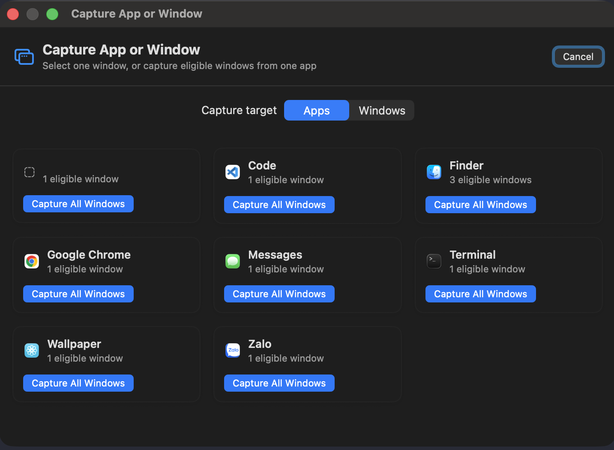
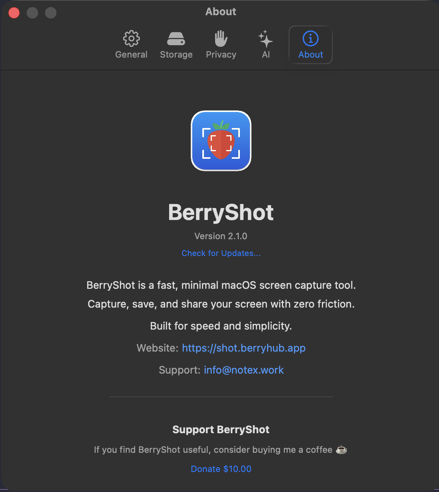
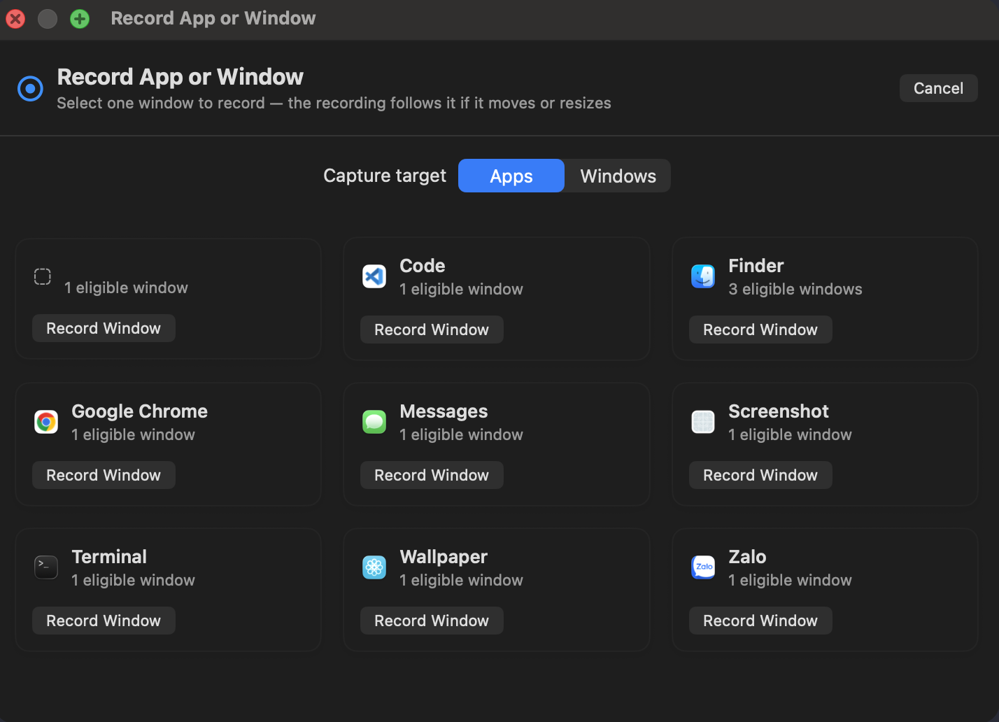
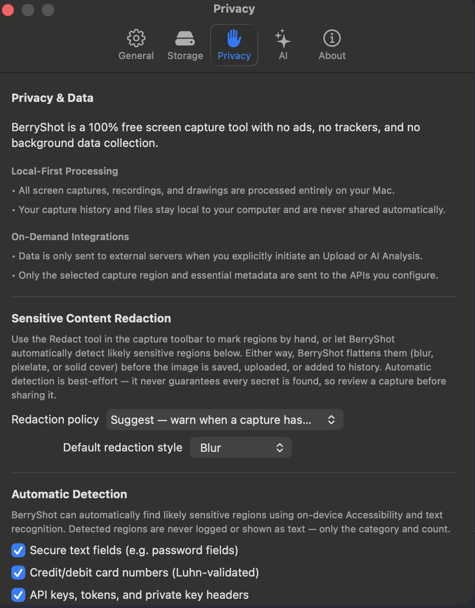
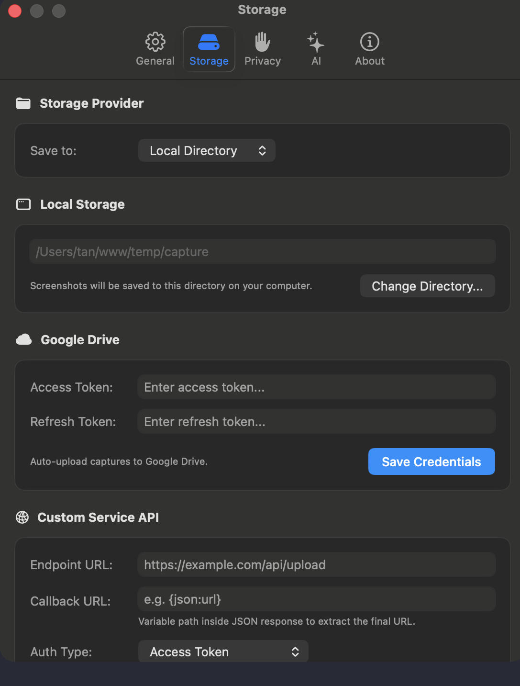
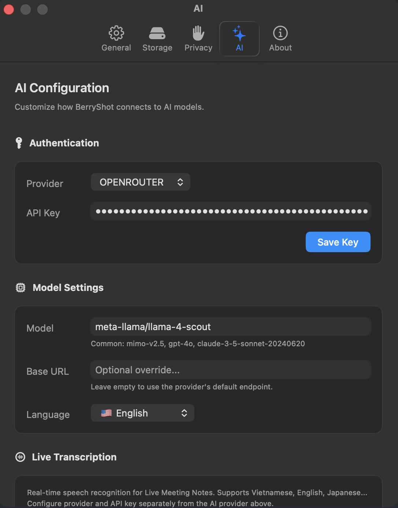
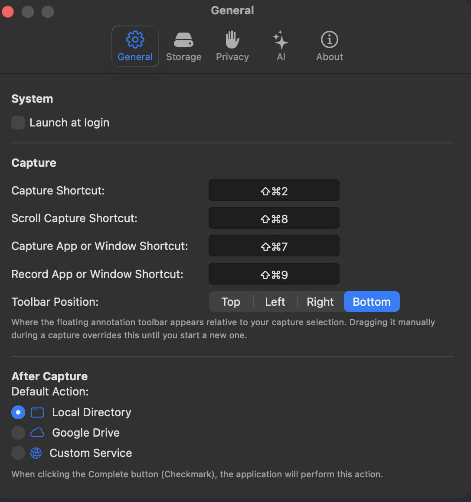

BerryShot Documentation
BerryShot is a native macOS screen utility built with Swift 6.0 and ScreenCaptureKit that delivers lightning-fast captures (<100ms latency), rich canvas annotations, 100% offline Optical Character Recognition (OCR), automated PII redaction, multi-provider AI vision integrations, and local Model Context Protocol (MCP) server support.
ScreenCaptureKit
GPU-accelerated native capture without memory leaks or UI lag.
Privacy First
On-device OCR and Keychain Enclave encryption for all API keys.
AI & MCP Ready
Direct bridge for Claude Code, Codex, Gemini 2.0, and GPT-4o.
Installation & Building From Source
Option 1: Official DMG Release (Recommended)
Download the pre-built universal binary for macOS Sonoma (14.0+) & Sequoia:
Option 2: Build From Source with Swift SPM
# 1. Clone repository
git clone https://github.com/berry-apps/berryshot.git && cd berryshot
# 2. Compile release build
swift build -c release
# 3. Assemble macOS .app bundle
./build_app.sh
# 4. Run your native build
open dist/BerryShot.app
macOS System Permissions
BerryShot requires two native macOS permissions to operate with hardware acceleration:
1. Screen Recording Permission (Required)
Enables ScreenCaptureKit to capture screen coordinates without black screens or lag.
2. Accessibility Permission (Optional)
Allows global hotkey registration (e.g. ⌘⇧2, ⌘⇧7, ⌘⇧8) while running in the background.
Quick Capture Floating Bar
Triggering the capture overlay summons the floating quick-action bar with instant access to all capture modes, tools, pixel loupe, and settings.

Canvas Annotation Suite
Annotate directly on the live screen before saving or copying. Includes vectors, text notes, spotlight markers, and step badges:

Studio Capture Editor & Coordinate Loupe
High-precision pixel coordinate loupe with live dimension readout, color palette picker, and stroke adjustments:

Window & Application Batch Capture
Press ⌘⇧7 to open the Window Picker. Select individual windows or batch capture all windows belonging to an active application with transparent drop-shadows.

100% Offline Apple Vision OCR
BerryShot executes Apple Vision text recognition on the local Neural Engine. Works with zero internet connection, zero telemetry, and instant 1-click clipboard copying.
Smart Auto-Redaction & Privacy Rules
Automatically conceal sensitive Personal Identifiable Information (PII) before sharing screenshots online:

AI Vision Analysis & Custom Prompt Presets
Send captured screen regions to Claude 3.5, Gemini 2.0, or GPT-4o with pre-configured or custom prompt templates:

AI Provider Configuration
Set up your API keys in Settings > AI Providers. All keys are encrypted in Apple Keychain:

Local MCP Server for Autonomous Coding Agents
BerryShot bundles a native Model Context Protocol (MCP) server helper enabling Claude Code and Codex to take screen captures and read UI manifests securely over stdio:
# Add to Claude Code CLI:
claude mcp add berryshot -- /Applications/BerryShot.app/Contents/Helpers/BerryShotMCP
Cloud Storage & Custom Webhook Uploads
Configure automatic screenshot uploads to Google Drive or your own private HTTP Webhook endpoint:

General Preferences & Hotkeys
Customize global shortcuts, launch at startup, capture sound effects, and floating window behavior:

About & PolyForm Noncommercial License
BerryShot is source-available and maintained under the PolyForm Noncommercial License 1.0.0. Free for personal, noncommercial, and educational use:
